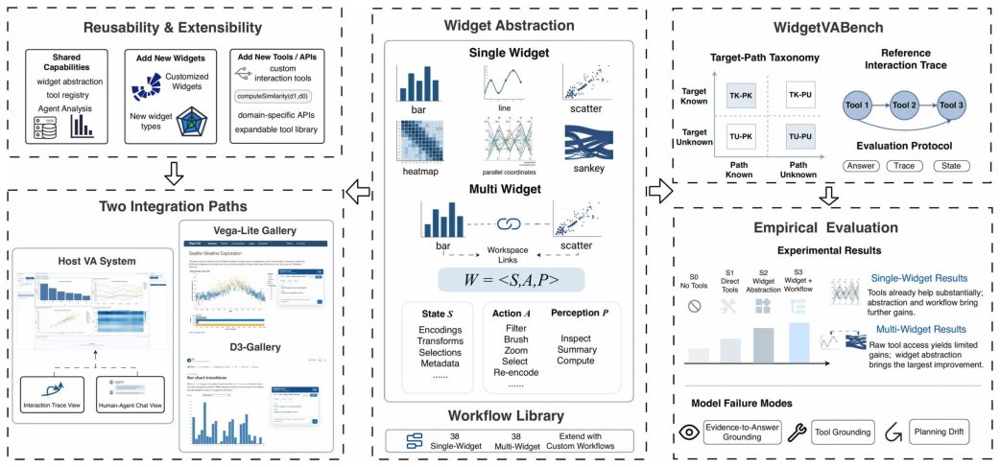
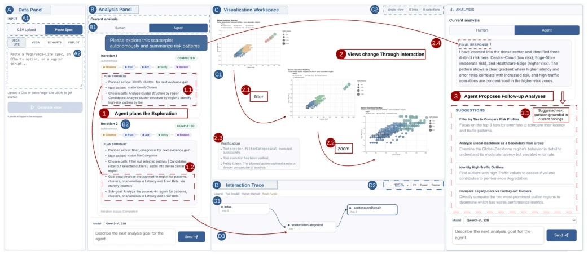
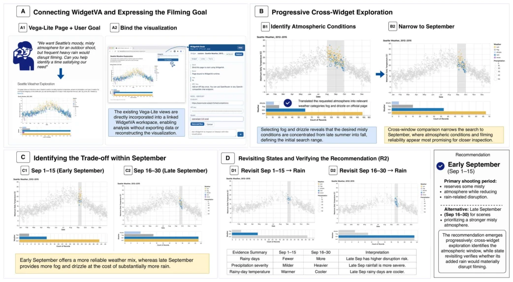

This paper attempts to use the WidgetVA framework to enable VLMs to truly operate visual interfaces, rather than merely acting as chatbots. The authors abstract visualization components into Widgets, possessing state, action, and perception APIs, which is quite clever, avoiding the chaos of pixel-level operations. They also developed a Benchmark WidgetVABench, scoring across three dimensions: answer, trajectory, and state, which is more reliable than simply looking at results. However, experimental results also exposed the VLM's inherent weaknesses in complex multi-step planning; even with the framework, the model still tends to fail in perception and state maintenance. Overall, it is a decent middleware attempt, but still far from a true "autonomous analyst," given that current VLMs are still too prone to hallucinations, multi-view collaboration is even more challenging, and future work requires better state verification mechanisms, otherwise Agents easily get themselves tangled in the "visual description" phase.
研究动机Motivation
可视化分析（VA）虽然强大，但需要专家将高层意图转化为复杂的界面操作序列，认知负担重 [1]-[5]。现有系统多将 LLM 定位为辅助工具 [6]-[10]，缺乏自主操作能力；而通用 GUI Agent 虽能操作界面，但基于像素级操作，缺乏分析语义，难以验证中间状态 [11]-[13]。这导致无法跨系统复用，也无法系统评估 VLM 在 VA 任务上的能力。本文旨在构建一个使 VA 界面可被 Agent 操作的框架，并评估当前 VLM 的极限，填补了从像素控制到语义操作之间的空白，解决了现有 VA 系统难以被 Agent 自主操作的问题，让 Agent 能像人类一样在同一个工作区协作。
Visualization Analysis (VA), while powerful, requires experts to translate high-level intentions into complex interface operation sequences, imposing a heavy cognitive burden [1]-[5]. Existing systems mostly position LLMs as auxiliary tools [6]-[10], lacking autonomous operation capabilities; whereas general GUI Agents can operate interfaces, they rely on pixel-level operations, lack analytical semantics, and struggle to verify intermediate states [11]-[13]. This results in an inability to reuse across systems and an inability to systematically evaluate VLM capabilities on VA tasks. This paper aims to construct a framework that enables VA interfaces to be operated by Agents, and to evaluate the current limits of VLMs, filling the gap between pixel control and semantic operations, solving the problem that existing VA systems are difficult for Agents to operate autonomously, allowing Agents to collaborate in the same workspace like humans.
The core lies in Widget abstraction, encapsulating interactive components into a triplet of state, action, and perception. State $S_i$ includes data, encoding, transformation, view, selection, and feedback context; Action $A_i$ corresponds to intent-level operations such as filtering and zooming; Perception $P_i$ is used to query the current view without side effects. Multiple Widgets compose a Workspace, sharing state and links. The framework supports two modes: wrapping existing systems or combining new systems. An analysis workflow library is introduced, solidifying common analysis patterns into reusable processes to assist Agent planning. In implementation, a JS toolkit is provided via WidgetVA Kit, supporting backends such as Vega-Lite. Interaction adopts closed-loop orchestration, where the Agent selects actions or queries based on the current state and continues after updating the state. The workflow library contains 38 single Widget and 38 multi-Widget processes, covering common analysis patterns, significantly reducing Agent planning difficulty, allowing the Agent to no longer explore from scratch.

Fig. 1. In WidgetVA, interactive views are exposed through a unified widget so that humans and agents can explore and analyze together in the same workspace. WidgetVA supports wrapping an existing VA page to make it agent-operable or composing a new system from widgets, and it provides reusable workflows to support multi-step planning. We also construct WidgetVABench to evaluate agent performance and exposes persistent limitations for future work.

Fig. 2. Overview of our integrated analysis environment. (A) The Data Panel initializes an analysis session from uploaded tabular data or a supported visualization specification. (B) The Analysis Panel supports mixed-initiative analysis by allowing users to record useful insights and inspect the agent’s iterative analysis process. (C) The Visualization Workspace renders the current visualization state. (D) The Interaction Trace Panel records the analysis as a branch-aware provenance graph and links each analysis step to its corresponding iteration card and workspace state.
Constructed WidgetVABench, containing 96 real and 304 synthetic datasets, covering single/multi-Widget tasks. Evaluated three VLMs (Gemini, GPT, Qwen), comparing four settings (no tool, direct tool, Widget abstraction, +workflow). Metrics include answer, trajectory similarity, and state. Results show Widget abstraction significantly outperforms direct tool, and workflow further improves performance. However, in multi-Widget tasks, state scores remain low, exposing model deficiencies in cross-view coordination and long-horizon planning. Human baseline performance outperforms models, indicating current VLMs still have a gap from reliable autonomous analysis. The experiments reveal current VLMs' persistent limitations in visual perception, tool implementation, and state construction, pointing the direction for future improvements.

Fig. 3. Scenario 2: finding an atmospheric filming window on an existing Vega-Lite page. (A) WidgetVA is connected directly to the existing visualization and receives the user’s filming goal (R3). (B) Cross-widget filtering and temporal brushing identify the relevant atmospheric conditions and progressively narrow the candidate period to September (R1). (C) Comparing early and late September reveals an atmosphere–reliability trade-off: late September provides more fog and drizzle but also substantially more rain. (D) The agent revisits the saved September states and drills down into rainy-day records (R2), verifying the higher disruption risk in late September and supporting Sept. 1–15 as the recommended filming window.